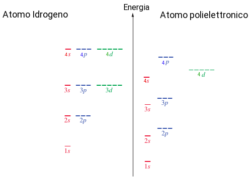
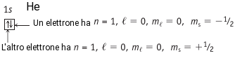
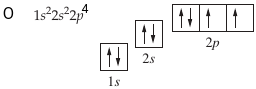

Principio di esclusione di Pauli
Per un atomo polielettronico non è possibile risolvere esattamente l'equazione di Schrödinger, ma si riccorre a metodi di approssimazione successiva e si ricavano orbitali analoghi a quelli dell'atomo di idrogeno che dipendono sempre da i tre numeri quantici n, l, m. Si parla quindi di orbitali idrogenodi.
La carica nucleare che un elettrone risentirebbe se non ci fossere altri elettroni sarebbe Z, il numero atomico. La carica nucleare realmente sperimentata da un atomo è ridotta dallo schermaggio degli altri elettroni presenti nell'atomo ad un valore Zeff. Gli effetti di schermaggio e penetrazione fanno sì che cia sia una differenziazione delle energie degli orbitali idrogenoidi rispetto a quelli dell'atomo di idrogeno che sono degeneri per un dato n. Minore è la Zeff, minore sarà l'attrazione dell'elettrone al nucleo e maggiore sarà la sua energia. A parità di n l'energia cresce nell'ordine s < p < d < f. Negli orbitali degli atomi polielettronici sono degenri soltanto gli orbitali dello stesso tipo.
Secondo il principio Aufbau o principio di costruzione, la configurazione elettronica di un atomo polielettronico si ottiene aggiungendo gli elettroni negli orbitali in ordine di energia crescente.
Come abbiamo visto un orbitale è una funzione matematica che descrive l'elettrone all'interno dell'atomo, quindi non è del tutto corretto parlare di occupazione di orbitali, anche se utilizzeremo questa visione semplificata.
Un regola molto importante da osservare per ottenere la configurazione elettronica di un atomo è il Principio di esclusione di Pauli, fromulato da Wolfgang Pauli nel 1925, il quale asserisce che:
Non è possibile avere in un atomo, due elettroni aventi tutti e quattro i numeri quantici uguali
Ciò significa che due elettroni caratterizzati dalla funzione Ψnlm, quindi aventi gli stessi numeri quantici n, l, m, devono per forza differire per il numero quantico ms. Un modo per rappresentare la configurazione elettronica di un atomo, consiste nel disegnare un quadratino che rappresenta un orbitale, e riempirlo con gli elettroni indicati come frecce. Ad esempio se consideriamo l'atomo di elio che ha due elettroni si ha il seguente schema:
Le frecce di senso opposto indicano elettroni con diverso stato di spin ms = ±1/2. L'atomo di litio (Z=3) ha tre elettroni due dei quali occupano l'orbitale 1s e il terzo l'orbitale ad energia superiore 2s per cui la sua configurazione elettronica è 1s22s1 o in maniera più concisa con [He]2s1.
| Li | ↓↑ | ↓ |
|---|---|---|
| 1s | 2s |

Regola di Hund
A causa della repulsione elettrone-elettrone, quando vengono occupati gli orbitali degeneri gli elettroni si dispongono in modo da occupare il numero massimo possibile di orbitali. Questa è la regola di Hund o principio di massima molteplicità. La configurazione elettronica del carbonio risulta quindi essere:
La configurazione dell'azoto con Z=6 è 1s22s22p3 oppure [He]2s22p3.

La configurazione dell'ossigeno con Z=8 è 1s22s22p4 oppure [He]2s22p4.
Il neon Z=10, ha infine tre orbitali p completamenti pieni:

Gli elettroni più esterni, cioè quelli a più alta energia sono noti come elettroni di valenza, e come vedremo giocano un ruolo chiava nella formazione del legame chimico. Ad esempio il sodio, Na: [Ne]3s1.
possiede un solo elettrone di valenza, mentre gli altri elettroni vengono detti interni.